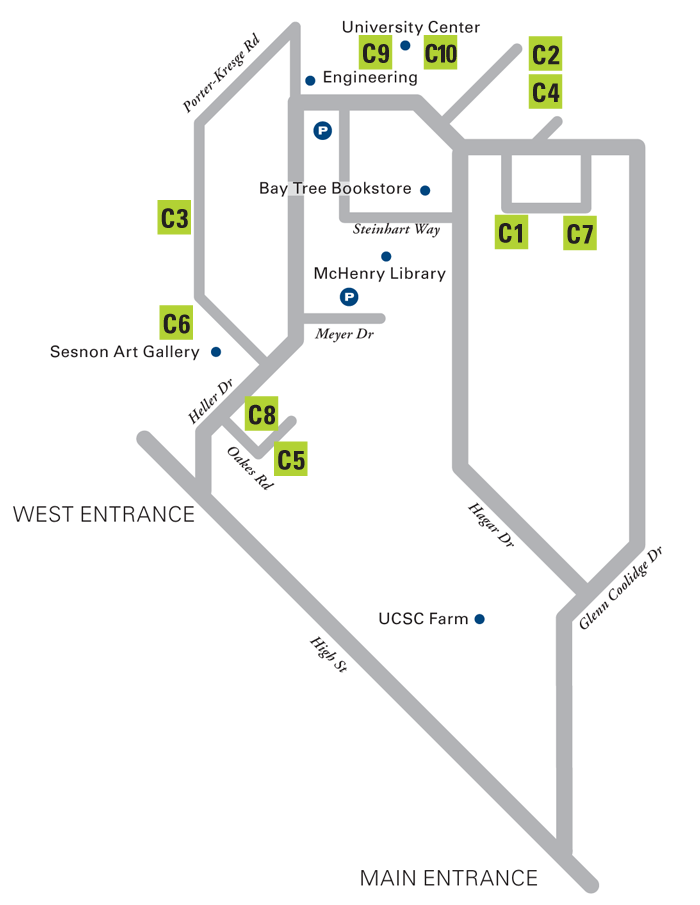

WELCOME BACK TO YOUR ORIGINAL SOCIAL NETWORK!

Get ready for likes, laughs, and good times with friends old and new. Make sure you catch all the great happenings this weekend including these featured events:
FEATURED EVENTS
-
A CELEBRATION OF THE UCSC STUDENT EXPERIENCEFRIDAY, APRIL 25, 6–9 PM | University Center, $50 / $150
Interact with students during a strolling dinner, followed by keynote speaker Leon Panetta, who will discuss: America in the 21st century — is America in renaissance or decline?
-
BANANA SLUG LUNCH: DINE & REWIND
SATURDAY, APRIL 26, 12–2 PM | Porter Dining Hall, $20
Morbi leo risus, porta ac consectetur ac, vestibulum at eros. Cras mattis consectetur purus sit amet fermentum.
-
TEACH-INS: GO BACK TO CLASS
SATURDAY, APRIL 26, 2:15–3:30 PM | Porter Classrooms, Free
Be a student again for an afternoon—choose from a selection of lectures from faculty including historian Bruce Thompson, forensic anthropologist Alison Galloway, and bioinformatics expert Ed Green.
-
ALUMNI WINE RECEPTION
SATURDAY, APRIL 26, 3:30–5:30 PM | Porter Dining Hall Patio, Free
Unwind with a glass of wine in the company of friends and reconnect with favorite faculty and staff, including the featured Teach-In speakers.
FRIDAY, April 25 | Events
-
Institute for the Biology of Stem Cells Laboratory Tour and Discussion Forum
3–4 PM | BIOMED, RM 460
Please join us for a walking tour of the Institute for the Biology of Stem Cells (IBSC) laboratory facilities, which will highlight some of the key technology needed to carry out stem cell experimentation.
-
Graduate Alumni Cocktail Hour
5–7 PM | GRADUATE STUDENT COMMONS
Reconnect with old friends and enjoy a refreshing cocktail with graduate alumni and current graduate students.
- STROLLING DINNER, LEON PANETTA KEYNOTE, AND DESSERT RECEPTION: 6 –9 PM, $150
- PANETTA KEYNOTE AND DESSERT RECEPTION: 7:30 – 9 PM $50
-
Alumni Shabbat
6:15 – 9 PM | SANTA CRUZ HILLEL, 222 CARDIFF PLACE, SANTA CRUZ
Please join us for Shabbat services and a home-cooked Shabbat meal. Nosh, mingle, share stories, and re-strengthen ties to fellow alums, Hillel, and UC Santa Cruz.
-
A Time to Remember: Honoring Black Alumni Past & Present
7 – 8:30 PM | CERVANTES & VELASQUEZ RM, BAYTREE CONFERENCE CENTER
Come join UCSC’s African/Black alumni and students to acknowledge the UCSC alumni and celebrate the opportunity for current students to network, coalesce, and enjoy light refreshments together.
-
Class of 2014, Senior Networking Mixer
7 PM – 9 PM | MOTIV, 1209 PACIFIC AVE., SANTA CRUZ
The Senior Class Council of 2014 invites all young alumni to join them at Motiv in downtown Santa Cruz for a fun event filled with conversation, appetizers, and student support.
A CELEBRATION OF THE UCSC STUDENT EXPERIENCE
6 – 9 PM | UNIVERSITY CENTER
COST: (choose one)
Join us for an evening of learning—learning from experience. Secretary Panetta knows that to meet the challenges of the 21st century, today’s students need to be open to transformation and actively develop their skills as leaders.
Saturday, April 26 | Events
-
Ira Pohl Fest — In Honor of Computer Science Professor Emeritus Ira Pohl
9 AM — 4:30 PM | BASKIN ENGINEERING AUDITORIUM, ROOM 101/BASKIN COURTYARD
Help us celebrate Ira Pohl’s retirement after 40 years’ tenure at UC Santa Cruz. Ira guided the development of computer science at UCSC, serving as department chair for four terms. He was instrumental in launching the popular computer game design major. He most recently served as Associate Dean for Online Education and initiated UCSC’s membership in Coursera.
-
Econ Alumni Reception
10 – 11 AM | ENGINEERING 2, ROOM 180 (SIMULARIUM)
Reconnect with fellow econ alums and learn about what is happening in the UC Santa Cruz Economics Department today.
-
Tour of the UCSC Farm
10 AM – 11:15 AM | UCSC FARM
(Meet at Louise Cain Gatehouse)Join us for a guided tour of the 30-acre UC Santa Cruz Farm and learn more about the education, research, and outreach taking place at the Farm and at the Alan Chadwick Garden.
-
The Lit Cafe: Coffee with Literature Department Faculty
10 – 11:30 AM | PORTER COLLEGE PROVOST HOUSE
Enjoy coffee and pastries at the Porter Provost House while mingling with faculty from the Literature Department.
-
Then and Now Alumni Walking Tour
10 – 11:30 AM | MEET AT PORTER CIRCLE
Revisit your favorite places and see what’s new on campus. This student-led tour will highlight UCSC’s latest prestigious achievements and fill you in on some new campus facts and figures.
-
Remembering Mary Holmes
10 – 11:30 AM | PAGE SMITH LIBRARY, COWELL COLLEGE
Join us for a lecture remembering the legacy of founding faculty member, artist, and art historian Mary Holmes.
-
Campus Reserve Walkabout
10 AM –12 PM | UC CAMPUS RESERVE
(Meet at the Fire Station parking lot)Join us for a talk and walkabout on the UC Santa Cruz Campus Natural Reserve, which serves as an outdoor classroom and living laboratory.
-
Making and Documenting History at UCSC
10 AM – 12 PM | SPECIAL COLLECTIONS, McHENRY LIBRARY
Please join us for an exploration of campus history and an opportunity to meet some of your favorite faculty and staff members who have been our Regional Oral History Project narrators.
-
Younger Lagoon Reserve—Habitat Restoration Workday
10 AM – 1 PM | YOUNGER LAGOON RESERVE
(Meet at the big blue whale skeleton in front of the Seymour Marine Discovery Center)Come join a day of habitat restoration and natural history interpretation at the scenic Younger Lagoon Reserve next to the Seymour Marine Discovery Center.
-
Philosophy Lecture and Discussion by Professor Jonathan Ellis
11 AM – 12:45 PM | COWELL, RM 132
Please join us for a lecture on “The Challenge of Conviction” by Professor Jonathan Ellis. Following the talk, Professor Ellis will lead a discussion on the ideas presented in the lecture. A light lunch will be served.
-
*FEATURED EVENT*
Banana Slug Lunch: Dine and Rewind
12 – 2 PM | PORTER DINING HALL COST $20
There was never a more original social network than the dining hall. Live it again. Reconnect with fellow Banana Slugs, remember good times, and make new memories over lunch.
-
Connecting the Generations: A Taste of the Past
12 – 3 PM | OAKES LEARNING CENTER
Come sit and enjoy lunch with UCSC African/Black alumni and students for an opportunity to engage in inter-generational learning, mentorship, guidance, and support. There will be a collective symposium space for all participants and then we will break into two separate caucuses to address issues within the community.
-
Digital Arts & New Media MFA Exhibition
12 – 5 PM | DARC BUILDING
UCSC’s Digital Arts and New Media Department invites you to join in work and play in the form of video installations, interactive experiences, telematic performances, and sound art.
-
Reception Honoring Frank Andrews
2 – 3:30 PM | CROWN PROVOST HOUSE
For 53 years, Professor Frank Andrews has touched the lives of many students, staff, and colleagues. Please join us for a gathering to honor Professor Andrews at the Crown Provost House.
-
Then and Now Alumni Walking Tour
2 – 3:30 PM | MEET AT PORTER CIRCLE
Revisit your favorite places and see what’s new on campus. This student-led tour will highlight UCSC’s latest prestigious achievements and fill you in on some new campus facts and figures.
-
*FEATURED EVENT*
Teach-In: Bruce Thompson – Spies: Espionage and Intelligence in the First and Second World Wars
2:15 – 3:30 PM | PORTER COLLEGE CLASSROOM
This lecture will explore the stranger-than-fiction stories of the most important double agents of the Second World War: Richard Sorge, who tried (unsuccessfully) to warn Stalin of the imminent Nazi invasion of the Soviet Union, and Juan Pujol Garcia (aka Agent Garbo for the British, and Agent Arabel for the Germans), the key figure in the elaborate deception campaign that enabled the Allies to surprise the Germans in Normandy. More generally, at a moment when the activities of intelligence agencies are once again under scrutiny, it will reflect on the history and significance of espionage and intelligence operations over the course of the past century.
-
*FEATURED EVENT*
Teach-In: Alison Galloway—A Day in the Life of the Dead
2:15 – 3:30 PM | PORTER COLLEGE CLASSROOM
Please join Campus Provost and Executive Vice Chancellor Alison Galloway for an academic afternoon filled with stories about the sorts of cases that a forensic anthropologist receives, the process of examination and analysis, and what types of information can be gathered from skeletal remains. This is a Teach-In that is all about what you don’t see on the popular television series Bones.
-
*FEATURED EVENT*
Teach-In: Ed Green—Genetics and Human Evolution
2:15 – 3:30 PM | PORTER COLLEGE CLASSROOM
Please join Richard E. (Ed) Green, assistant professor of biomolecular engineering, as he shares surprising insights into evidence of interbreeding between Homo Sapiens and Neanderthals. During his talk, Green will discuss the technology behind the findings, the scientific results, how we are related to the Neanderthals, and what we can learn about human history from DNA sequences.
-
International Education Alumni Reception
2:30 – 4 PM | UNIVERSITY CENTER – LEVIN LANAI
If you were an international student or studied abroad during your time at UC Santa Cruz, please join us for the International Education Alumni Reception. Enjoy cultural performances from current students while networking with other international education alumni.
-
Tour the UCSC Arboretum & Wine Reception
2:30 – 4:30 PM | UCSC ARBORETUM
Join Arboretum staff and volunteers for a tour and wine reception at the UC Santa Cruz Arboretum, a spectacular living collection.
-
College Eight Sustainability Tour
3 – 5 PM | MEET IN THE COLLEGE EIGHT PLAZA
Explore the many sustainability programs at UC Santa Cruz, meet current students, and learn what everyone can do to help the campus become a living lab for sustainability.
-
Crown Alumni Reception
3:30 – 5 PM | CROWN PROVOST HOUSE
Please join us at the Crown Provost House for an alumni reception where you can reconnect with past Crownies and also meet new friends.
-
*FEATURED EVENT*
Alumni Wine Reception
3:30 – 5:30 PM | PORTER DINING HALL PATIO
Unwind with a glass of wine in the company of friends and reconnect with favorite faculty and staff, including the featured Teach-In speakers.
-
Lavender Reception
4 – 5:30 PM | CANTÚ QUEER CENTER, MERRILL COLLEGE
Come join fellow GLBTI alumni, students, and the Cantú Queer Center staff for our annual Lavender Reception.
-
Three Lives in Photography: Robert Dawson, Joel Leivick, David Pace
5 – 6 PM | MARY PORTER SESNON ART GALLERY
Join fellow alumni and art lovers for a reception and gallery walk-through with three UC Santa Cruz alumni photographers: Robert Dawson, Joel Leivick, and David Pace.
-
Natural History Field Quarter Happy Hour Celebration
5 – 7 PM | ROSIE MCCANN’S IRISH PUB, 1220 PACIFIC AVE, SANTA CRUZ
Come join alums and staff of the Natural History Field Quarter and help us inaugurate a new group, The Friends of the Norris Natural History Programs. We’ll be celebrating exciting news around the future of Field Quarter, the UCSC Natural History Museum, and the Environmental Field Program. Share your ideas, toast the future, and reminisce with great folks at Rosie McCann’s Irish Pub.
-
SOMeCA 25th Anniversary
6 – 9 PM | COWELL DINING HALL
We invite current student leadership to a special dinner discussion with former student organizers and current community leaders. This year we will be celebrating 25 years of SOAR at UC Santa Cruz.
-
Lick Observatory History and Telescope Viewing
8 – 11 PM | LICK OBSERVATORY, MOUNT HAMILTON | COST $100
Please join us for a fascinating lecture about James Lick and the history of the observatory, followed by viewing through our telescopes: the 36-inch Lick Refractor and/or the 40-inch Nickel Reflector.
Sunday, April 27 | Events
-
Morning Tour of the UCSC Arboretum
9 – 10 AM | UCSC ARBORETUM
Join us for a lovely tour of the Arboretum. See native flora from around the globe while reconnecting with fellow alums, Arboretum staff, and volunteers.
-
Brunch with the Merrill Provost
9:30 – 11:00 AM | MERRILL PROVOST HOUSE
Please join fellow Merrill alumni for a brunch with Provost Elizabeth Abrams at the Merrill Provost House.
-
Cowell Brunch and Service of Remembrance
10 AM – 12:15 PM | COWELL PROVOST HOUSE LAWN
Please join us for a free brunch welcoming all Cowell alumni and friends. Gather on the lawn of the beautiful Cowell Provost House and enjoy the company of the Cowell community while reveling in the breathtaking views of the Monterey Bay. Following the Cowell Brunch, we invite you to an intimate gathering of remembrance to honor all those who have passed in the last year.
-
Stevenson Alumni Brunch and Career Panel
10 AM – 12 PM | STEVENSON PROVOST HOUSE
Please join Provost Alice Yang at her home for the Stevenson Alumni Brunch and Career Panel. Reconnect with fellow alumni, meet current students, and enjoy a delicious meal together.
-
Merrill by the Decades
9:30 AM – 11 AM | MERRILL PROVOST HOUSE
Please join alumni, staff, students, faculty, and fellows for a discussion and celebration of Merrill Student Social Activism.
-
Digital Arts and New Media MFA Exhibition
12 – 5 PM | DARC BUILDING
UCSC’s Digital Arts and New Media Department invites you to join in work and play in the form of video installations, interactive experiences, telematic performances, and sound art.
-
Dizikes Concert
12:30 PM – 1:30 PM | MARY HOLMES FIRESIDE LOUNGE
(Formerly Cowell Fireside Lounge)Join us for this year’s annual Dizikes Concert, the world premiere of a chamber oratorio inspired by the paintings of Mary Holmes, based on the Greek myth as told by Ovid and Moschus. Come enjoy music by Peter Josheff, and Libretto by Bay Area soprano Eliza O’Malley, granddaughter of Mary Holmes and Peter Josheff. She will be joined by tenor Brian Thorsett, conductor Jonathan Khuner, and the Sonic Harvest Players.
Thank you for helping us create a social experience we can all share!
We’re encouraging alumni and guests to take “selfies” (photos of themselves) this weekend and share! It’s an easy and fun way for us to collect memories of the event.
HERE’S WHAT TO DO:
- Look for the “Selfie Spot” signs we’ve placed in photogenic spots around campus.
- Use your mobile phone or device to shoot and share a “selfie” with us on Twitter and Instagram using the hashtag #ucsc
- We’ll pull photos using the #ucsc hashtag from Instagram and Twitter into a feed and share them throughout the weekend.
Parking
SATURDAY, APRIL 26
Transportation and Parking staff will be on duty in the Performing Arts Parking Lot (lot 126) starting at 8:30 a.m. They will issue complimentary parking permits that will allow you to park, not only in the Performing Arts lot, but in all lots on campus that allow “A” permits.
When the Performing Arts lot fills, the staff will transition to the Core West Parking Lot, where free permits also will be handed out.
Shuttle service will be provided from 8:30 a.m. to 6:30 p.m. to transport visitors between the Performing Arts Parking Lot, Core West Parking Lot, and Porter College, where several main events will be located.
To assist those who want to explore the rest of campus, a second shuttle bus will make loops of campus from 11 a.m. to 4 p.m., stopping at all shuttle stops.
SUNDAY, APRIL 27
Parking is free of charge (no permit required) in the majority of lots
on the UCSC campus on Sunday. The exceptions are:
- Performing Arts Parking Lot 126.
- Colleges Nine and Ten Lots 164, 165, 166.
- Cowell and Stevenson Colleges Lots 109, 110.
- Porter College Lots 124, 125.
Normal campus shuttle service and city bus service will be in effect.
